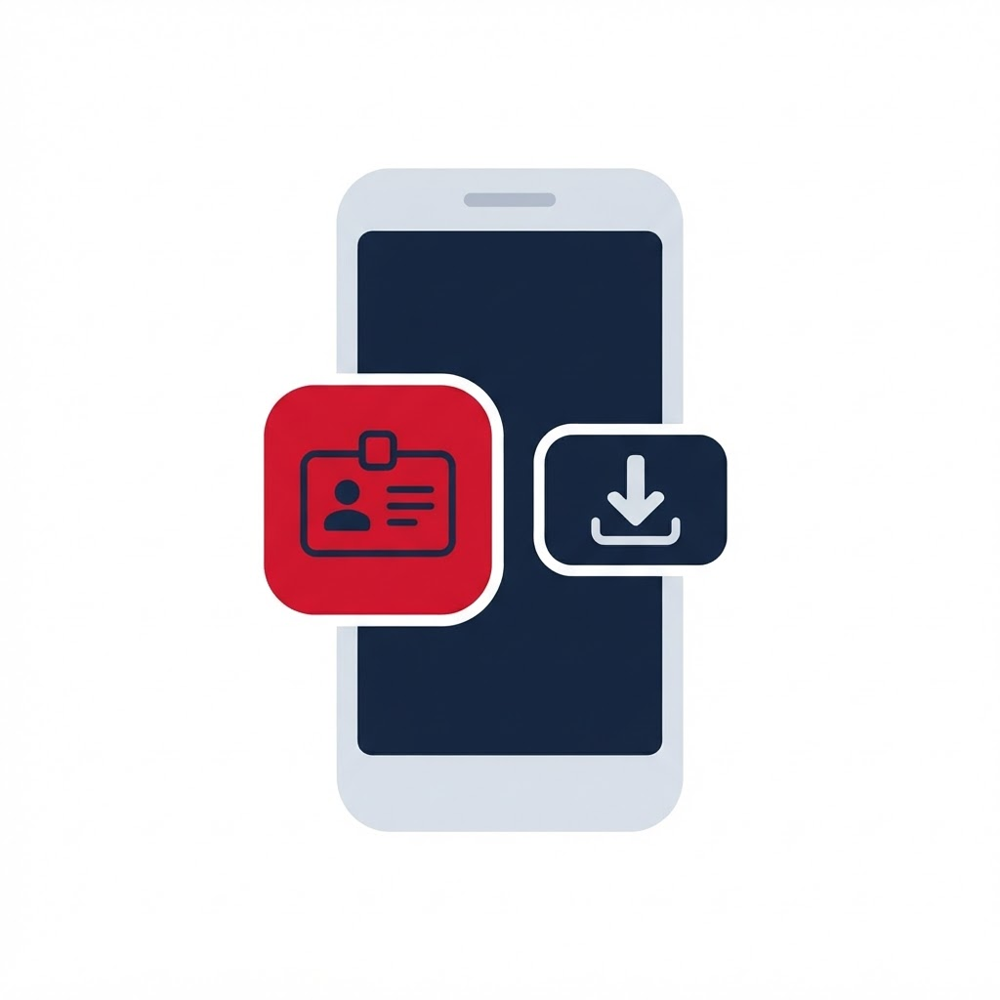
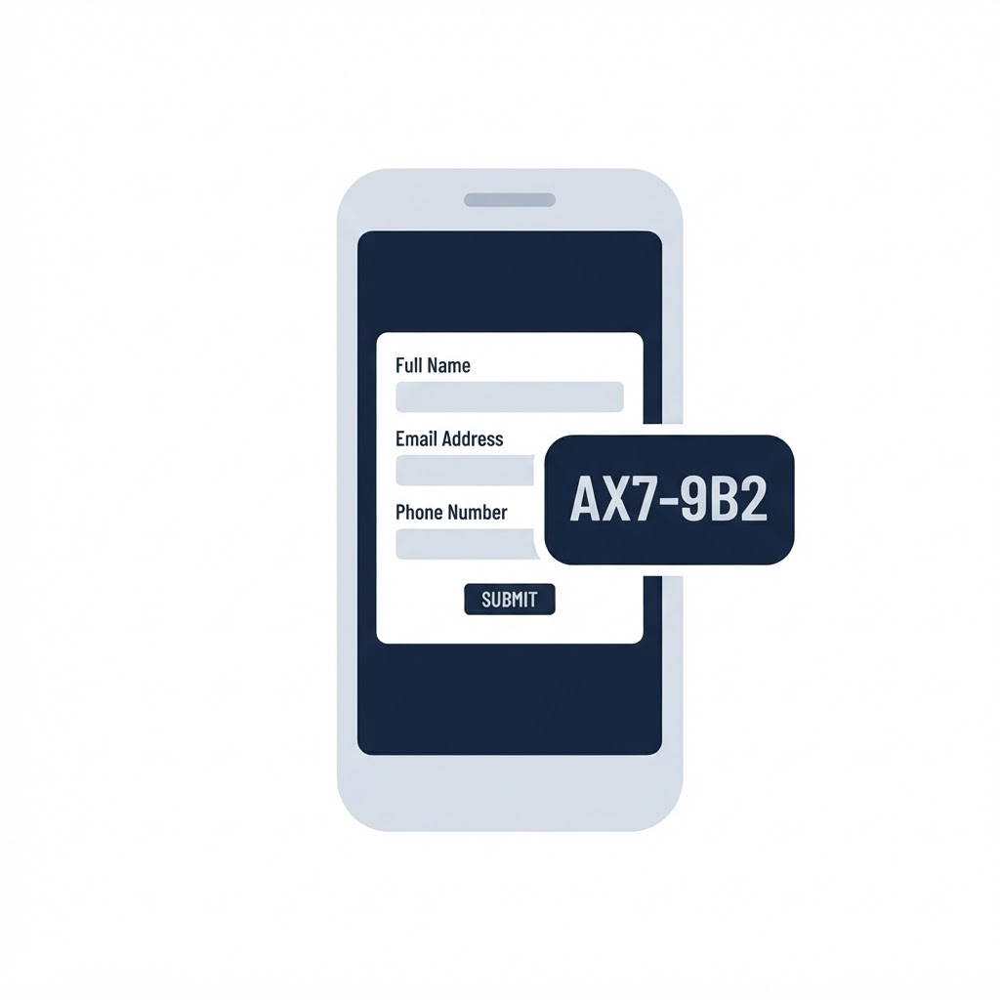
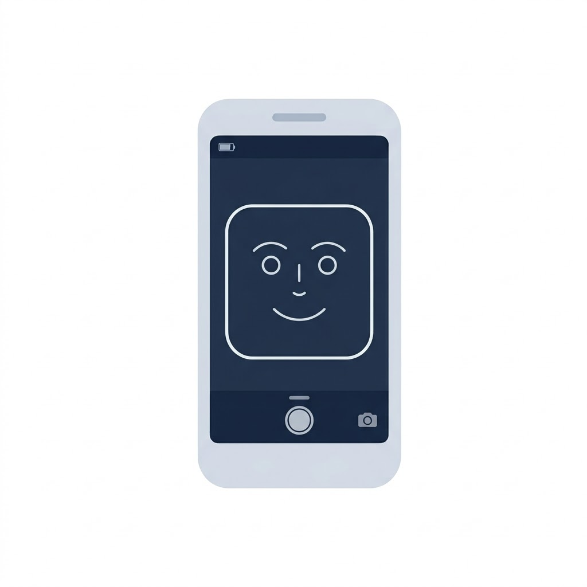
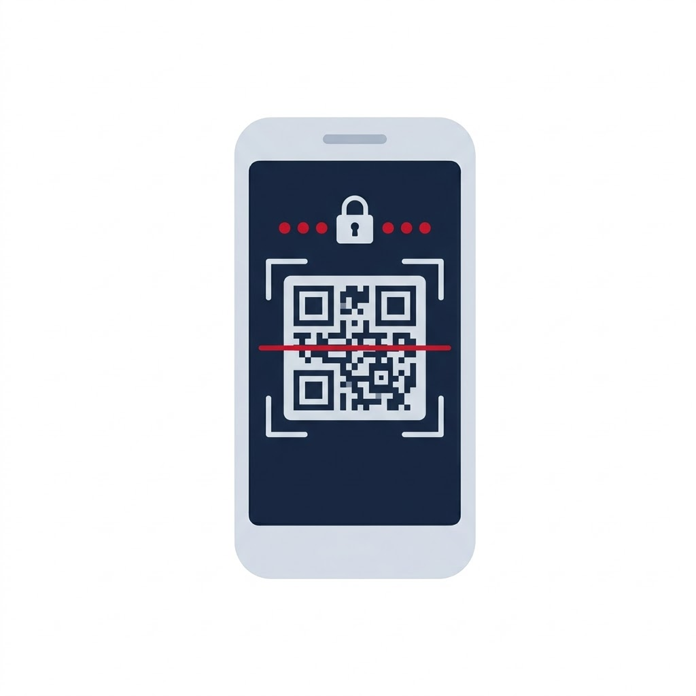

Informasi pelayanan IKD
Apa itu IKD, siapa yang bisa memakainya, dan apa yang perlu disiapkan sebelum datang.
Yang perlu disiapkan
- KTP-el asli
- Ponsel pintar dengan kamera dan koneksi internet
- Nomor ponsel dan email aktif milik sendiri
- Usia minimal 17 tahun atau sudah menikah
Informasi kantor layanan
- Lokasi: Disdukcapil Kota Bandar Lampung, Jalan Dokter Susilo No.1A, Sumur Batu, Kec. Teluk Betung Utara, Kota Bandar Lampung, Lampung 35212
- Jam layanan: 08.00 – 16.00
- Biaya: Tanpa dipungut biaya
- Kontak: Petugas pelayanan IKD
Apa bedanya IKD dengan KTP-el?
IKD memuat data kependudukan yang sama dalam bentuk aplikasi di ponsel. Keduanya berlaku sebagai identitas; IKD memudahkan Anda menunjukkan data tanpa membawa kartu fisik.
Apakah KTP fisik boleh dibuang setelah punya IKD?
Tidak. Simpan KTP-el Anda. Tidak semua layanan sudah menerima IKD, dan KTP-el dipakai saat aktivasi.
Bagaimana jika ganti ponsel atau lupa PIN?
Aktivasi biasanya terikat pada ponsel tertentu. Datang ke kantor layanan dengan KTP-el untuk aktivasi ulang atau reset PIN.
Panduan digital aktivasi IKD
Lima langkah dari mengunduh aplikasi sampai IKD aktif.
Unduh aplikasi IKD
Cari “IKD” atau “Identitas Kependudukan Digital” di Play Store atau App Store. Pastikan penerbitnya Kementerian Dalam Negeri.

Daftar dengan data Anda
Isi NIK, nomor ponsel, dan email. Masukkan kode verifikasi (OTP) yang dikirim ke ponsel atau email Anda.

Ambil foto wajah
Foto wajah di tempat terang, tanpa masker, kacamata, atau topi. Sistem mencocokkannya dengan data kependudukan.

Datang ke kantor layanan
Bawa KTP-el dan ponsel. Petugas memverifikasi identitas dan menampilkan kode QR aktivasi.
Pindai QR dan buat PIN
Pindai kode QR dari petugas, lalu buat PIN rahasia. IKD aktif dan siap dipakai.

Kendala & solusi
Masalah yang paling sering terjadi saat aktivasi dan cara mengatasinya. Tekan judul untuk melihat jawabannya.
Pesan aktivitas tidak masuk
datang ke petugas lapokan masalah yang di alami untuk melakukan aktivitas secara manual
Wajah tidak terbaca
Foto di tempat terang, lepas masker, kacamata, dan topi, bersihkan lensa kamera, dan posisikan wajah tepat di dalam bingkai. Jika masih gagal, petugas akan membantu proses verifikasi di kantor.
Lupa PIN
Datang ke kantor layanan dengan KTP-el dan ponsel Anda untuk mengatur ulang PIN.
Ganti ponsel
IKD terikat pada ponsel yang diaktivasi. Untuk memindahkannya, datang ke kantor layanan dengan KTP-el dan ponsel baru untuk aktivasi ulang.
Aplikasi tidak bisa dibuka atau error
Perbarui aplikasi dari Play Store atau App Store, pastikan ruang penyimpanan cukup dan koneksi internet stabil, lalu tutup dan buka kembali aplikasinya.
NIK tidak ditemukan atau data tidak sesuai
Datang ke kantor layanan dengan KTP-el dan Kartu Keluarga agar petugas memeriksa data kependudukan Anda.
Keamanan IKD
IKD berisi data pribadi Anda. Jaga dengan kebiasaan sederhana berikut.
Lakukan
- Simpan PIN hanya untuk diri sendiri
- Perbarui aplikasi dari toko resmi
- Aktifkan kunci layar ponsel
- Tunjukkan kode QR hanya kepada petugas yang sah
Jangan
- Membagikan PIN atau kode OTP kepada siapa pun
- Memotret kode QR IKD lalu mengunggahnya
- Mengunduh aplikasi dari tautan tidak resmi
- Meminjamkan ponsel yang IKD-nya aktif